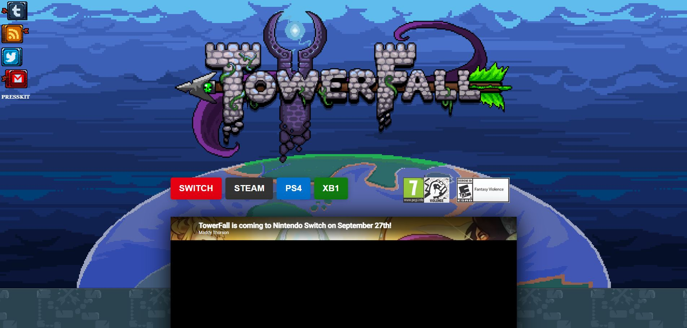
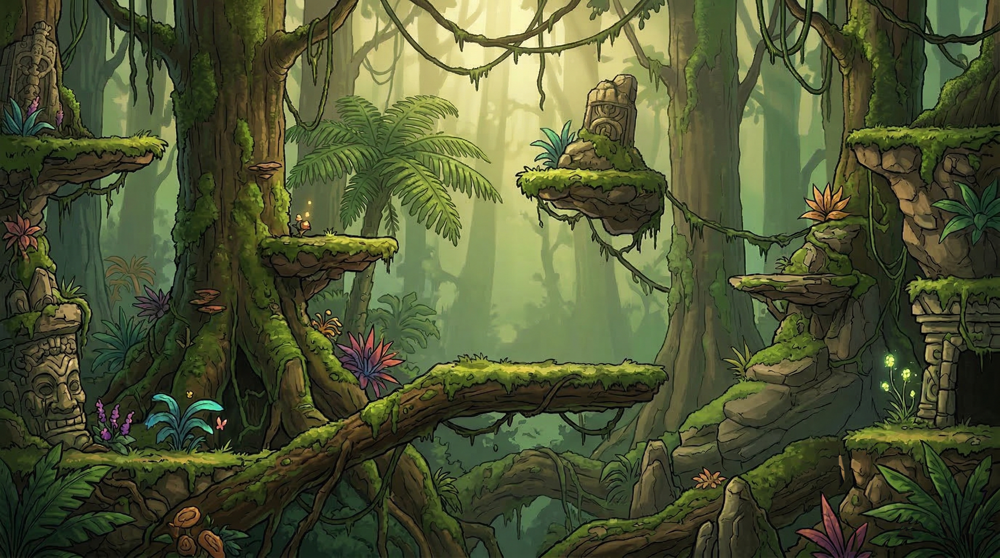
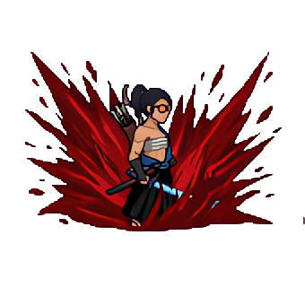
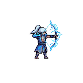
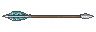

Versus core
Round, first-to-5, tiro, melee, dash, parry, stomp e coleta de flechas existem.
Resumo visual da auditoria em 18/06/2026. A esquerda: referencia oficial/comercial de TowerFall. A direita e abaixo: material atual versionado no The Last Arrow.



Mizu Um dos 2 personagens jogaveis atuais.
Storm Dragon Segundo personagem jogavel atual.
Flecha base Economia de flechas existe, mas ainda sem familia completa de tipos especiais.Round, first-to-5, tiro, melee, dash, parry, stomp e coleta de flechas existem.
O codigo e a UI estao centrados em Slot 1 e Slot 2.
Sem Quest, Trials, seletor de arenas, baus, power-ups, variantes e campanha co-op.
HUD e feedback existem, mas nao ha replay final, awards, estatisticas e fluxo completo.